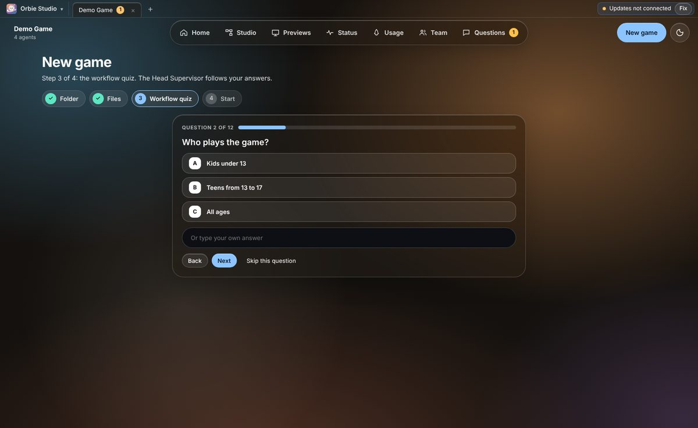
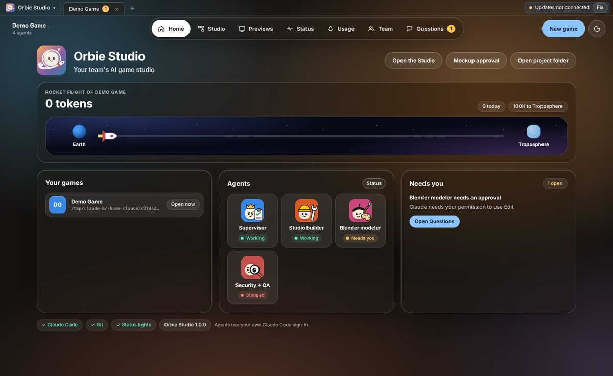
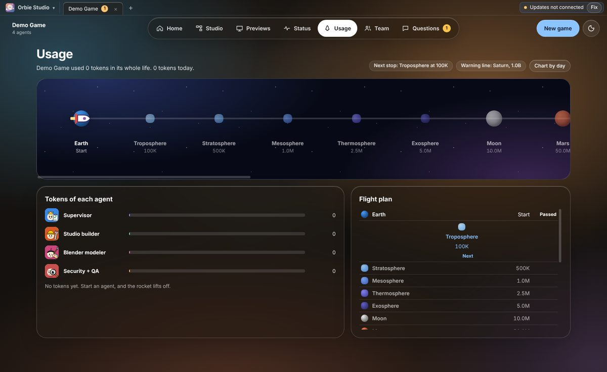
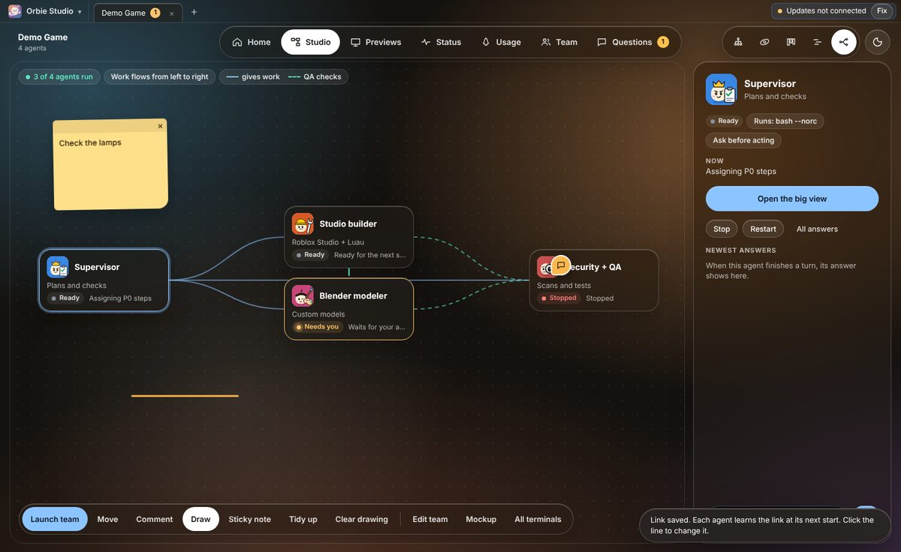

Quick guide: set up, install and make your first game
Version 1.0 · Your team's AI game studio · Created and published by CohesiveOrbie Studio runs a team of AI agents that build a Roblox game with you. Each agent is one Claude Code session with its own job, its own context and its own memory. You see every agent on one screen, you answer their questions, and you approve their work.
The agents work in the folder of your game on your own PC. They use your own Claude Code sign-in.
Do these steps once. Each link opens the official page.
| What | Need | How |
|---|---|---|
| Windows 10 or 11 | Required | Orbie Studio 1.0 runs on Windows. A Mac version is planned. |
| Claude Code | Required | Open PowerShell and run irm https://claude.ai/install.ps1 | iex. Then run claude once and sign in. Full steps: Claude Code setup guide. |
| Roblox Studio | Required | Download Roblox Studio from the Roblox Creator Hub. Sign in with your Roblox account. |
| Blender | Optional | The art agent makes 3D models in Blender. Download it from blender.org. |
| Git for Windows | Optional | Git saves versions of your game. Download it from git-scm.com. |
| Tailscale | Optional | Remote view shows your board on a phone or a Mac. Away from home it needs Tailscale. |
Orbie-Studio-Setup-1.0.0.exe. This guide is on the same page.The installer also puts this guide in the install folder. In the app, open the main menu (top left) and click Quick guide (PDF).
GAME_DIRECTION.md and 12 picture prompts.
mockup/PROMPTS.md and drop them on the Mockup screen.| Tab | What it shows |
|---|---|
| Home | Your games, the agents, the open questions and the rocket of the open game. |
| Studio | One card for each agent. A double-click on a card opens the big view with the live terminal. |
| Previews | The newest answer and the views of each agent. |
| Status | What each agent does now. Start, stop and open each agent. |
| Usage | The rocket flight. The rocket passes one stop for each token goal, from Earth to the Andromeda Galaxy. |
| Team | Planned: members, hours, questions to the team lead, shared prompts and the money pool. |
| Questions | Every question and every approval from the agents. You can also write to one agent. |



| Action | How |
|---|---|
| See one agent | Click its card. The side panel shows its status, its newest answers and a message box. |
| Open the big view | Double-click a card. The live terminal fills the Studio. Click Canvas to go back. |
| Move a card | Drag the card. It snaps to the grid. |
| Connect two agents | Drag the ball on the right side of a card to another card. Click the line to choose "Gives work" or "Checks the work". Each agent learns the link at its next start. |
| Comment | Click Comment, then click the canvas or a card. A comment on a card can go to that agent. |
| Draw and notes | Click Draw to draw on the canvas. Click Sticky note to add a note. |
| Change the layout | Click one of the five icons on the top right: Tree, Orbit, Lanes, Timeline or Flow. |
| Change the theme | Click the moon button on the top right: Dusk, Daylight, Aurora or Midnight. |